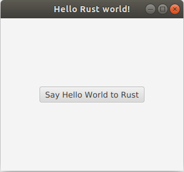
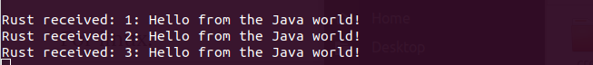

In this post, I would like to share the way how we can implement a Rust application that has a User Interface written in JavaFX.
A brief description follows, but you may see the full code here.
General description
We will create a Rust application that:
- Creates a JVM
- Starts a JavaFX application
- Accepts callbacks from the Java world and prints them in the console.
Creating a JVM from Rust code and communicating with the Java world is achieved using the j4rs crate.
For the sake of simplicity, the JavaFX application is a simple window with a button. Once the button is pressed, that Java code generates a String and sends it to Rust.
There are two worlds that we should code into… Java and Rust.
The Java world
We will use the Hello World project that is provided with the Oracle documentation.
Our JavaFX application is created with the FxUiApp class. It will be launched when the Rust code will call the launchFxUiApp method.
It contains just a button. Once the button is pressed, the ButtonEventHandler class performs the callback to the Rust world, sending “Hello World” messages.
Note: You may read the comments for more details.
public class FxUiApp extends Application {
// The application instance is created by the JavaFX framework.
// We need a way to access the instance from Rust though,
// in order to initialize the callbacks.
//
// To keep things simple for this example,
// we keep here the root of the JavaFX Scene.
// From this, we will be able to get the ButtonEventHandler
// and setup the rust callbacks in order for Java
// to communicate with Rust.
private static StackPane root = new StackPane();
@Override
public void start(Stage primaryStage) {
// Create the button
Button btn = new Button();
btn.setText("Say Hello World to Rust");
btn.setOnAction(new ButtonEventHandler());
root.getChildren().add(btn);
// Create the Scene
Scene scene = new Scene(root, 300, 250);
primaryStage.setTitle("Hello Rust world!");
primaryStage.setScene(scene);
primaryStage.show();
}
// Rust code will call this method to launch the JavaFX application
public static void launchFxUiApp() {
new Thread(() -> {
// Launch the javafx app
Application.launch();
}).start();
}
// Rust code will call this method to retrieve the
// ButtonEventHandler instance that handles events of the Button.
// Rust code will use this instance to initialize a callback channel.
public static ButtonEventHandler getButtonEventHandler() throws Exception {
// Wait until the JavaFX launches.
// This is a hack to keep things readable.
// Better approaches may include using latches, atomic references etc.
while (root.getChildren().isEmpty())
Thread.sleep(100);
// We know exactly what is being created in this example.
// This is totally unsafe for other use cases.
return (ButtonEventHandler)((Button)root.getChildren().get(0)).getOnAction();
}
}The Rust world
The ony dependency needed for our Cargo.toml, is the j4rs crate.
The main function creates a new JVM and starts the JavaFX application by calling the FxUiApp.launchFxUiApp method in Java.
It then initializes a callback channel to the ButtonEventHandler class and uses the Receiver of the channel to get messages from the Java world.
The messages are printed to the console upon reception.
Note: You may read the comments for more details.
use std::env;
use j4rs::{ClasspathEntry, InstanceReceiver};
fn main() {
// We need to add the jar file that contains
// the UI code in the classpath.
// We assume that the env var "FX_UI_JAR_PATH" exists
// and contains the absolute path of the jar file.
// E.g. /home/myuser/git/j4rs-showcase/java/target/fx-ui-0.1.0.jar
let ui_jar_path = env::var("FX_UI_JAR_PATH").expect("The FX_UI_JAR_PATH env var is not set.");
// Create the `ClasspathEntry` for the jar
let cp_entry = ClasspathEntry::new(&ui_jar_path);
// Create a new Jvm, adding the FX_UI_JAR_PATH to the classpath
let jvm = j4rs::JvmBuilder::new()
.classpath_entry(cp_entry)
.build().expect("Could not create the JVM");
// Launch the JavaFX UI
let _ = jvm.invoke_static(
"io.github.astonbitecode.FxUiApp",
"launchFxUiApp",
&vec![])
.unwrap();
// Retrieve the ButtonEventHandler instance
// that is used to handle the JavaFX button events.
let button_event_handler = jvm.invoke_static(
"io.github.astonbitecode.FxUiApp",
"getButtonEventHandler",
&vec![])
.unwrap();
// Install a callback channel in the ButtonEventHandler instance
let instance_receiver: InstanceReceiver = jvm
.init_callback_channel(&button_event_handler).unwrap();
// Wait for messages from the receiver
while let Ok(received) = instance_receiver.rx().recv() {
let message_from_java: String = jvm.to_rust(received).unwrap();
println!("Rust received: {}", message_from_java);
}
}
Steps for building and executing
For this demo, we used Java 11 and maven to build the Java code. Therefore, these should be installed in the host before building.
-
Build with
cargo build --manifest-path=rust/Cargo.tomlDuring building, you should get a warning like:
warning: Please export the env var “FX_UI_JAR_PATH” with the value “/home/myuser/git/j4rs-showcase/java/target/fx-ui-0.1.0.jar” before running the application
-
Export the FX_UI_JAR_PATH variable
For linux:
export FX_UI_JAR_PATH=/home/myuser/git/j4rs-showcase/java/target/fx-ui-0.1.0.jar -
Execute with
cargo run --manifest-path=rust/Cargo.toml
Execution output


Thanks for reading!